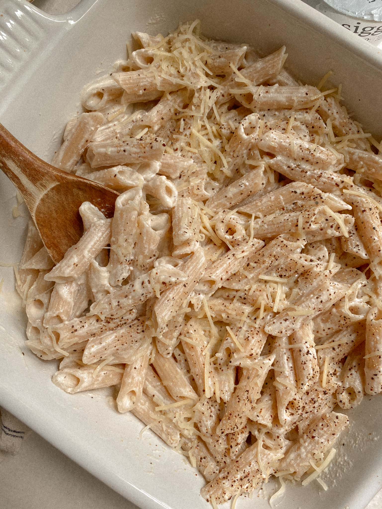

Alfredo pasta

Description
Alfredo pasta is a great meal to add to your repertoire.
Ingredients
- Penne
- Classcio Creamy Alfredo Pasta Sauce
- butter
Directions
- Boil 1-2 cups of water and then add pasta for 4-7 minutes. Stir occasionally.
- Drain the water and remove pasta from pot
- Add butter on medium heat. When the butter has melted, add and mix the sauce and pasta.
Return to homepage